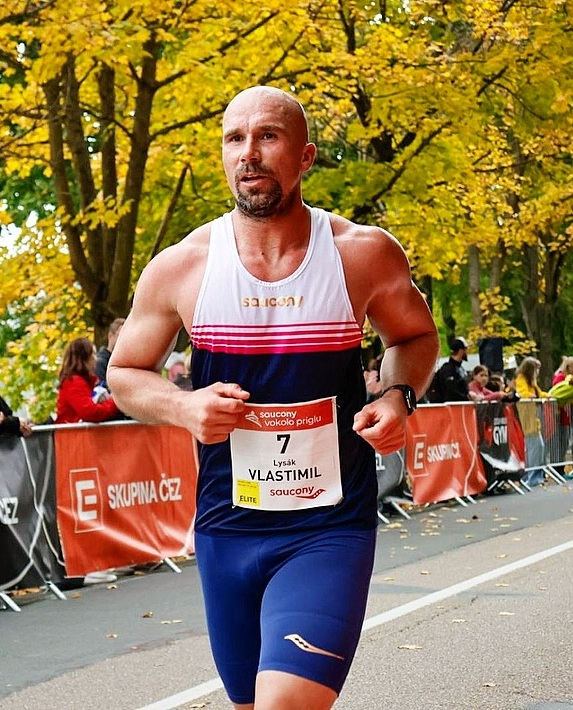
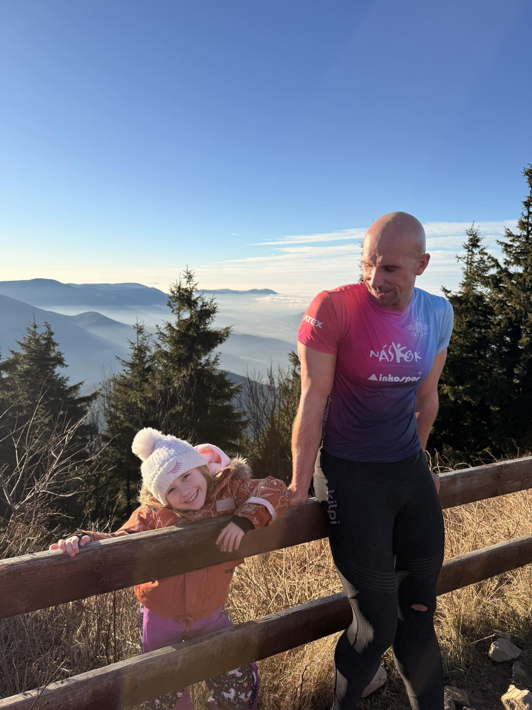
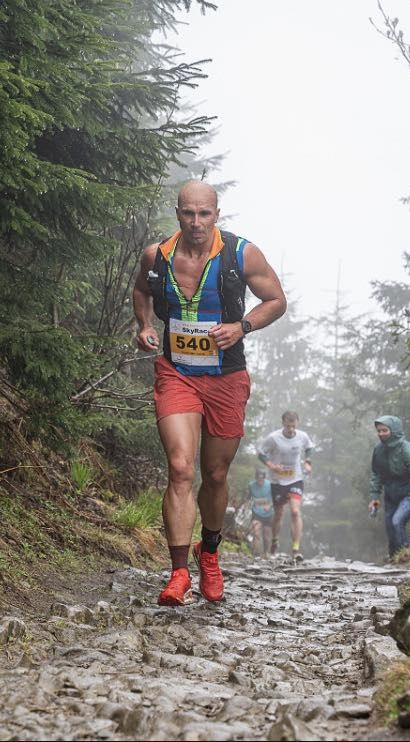

Osobní tréninky
Ve fitness centru nebo na místě dle Vaší volby. Tréninky přizpůsobené Vašim cílům a časovým možnostem.

Antické myšlení mě fascinovalo od doby, kdy jsem se dějiny učil na základní škole. Chtěl bych, abychom uměli přemýšlet o krocích v aktivitách, které nás mají činit šťastnými — aby nás bavily a dodaly nám potřebnou sebedůvěru. Své tělo není třeba ničit, ale zlepšovat ho a dostávat dál. Jen netrénovat, ale i kvalitně regenerovat. Duševní hygiena je důležitá pro náš rozvoj. Když si nebudete vědět rady, věřím, že vám pomohu — anebo vás nasměruji správným směrem.
Co pro Vás mohu udělat
Ve fitness centru nebo na místě dle Vaší volby. Tréninky přizpůsobené Vašim cílům a časovým možnostem.
Osobní i skupinové tréninky. Správná technika, zvyšování výkonnosti a kondiční příprava.
Individuální tréninkové plány pro běžce — od 5 km po maraton. Periodizace, objem i intenzita na míru.
Individuální cvičení a stabilizační systém páteře. Posílení hlubokých svalů jako základ kondice.
Vedený pasivní i dynamický strečink. Zlepšení pohyblivosti, prevence zranění, rychlejší regenerace.
Snižování hmotnosti, zdravé hubnutí. Nastavení stravování, které Vám opravdu vydrží.
Poradenství na míru — výběr suplementů, načasování stravy a optimalizace sportovního výkonu.
Sportovní masáže a kinesiotaping pro rychlejší regeneraci, úlevu od bolesti a prevenci zranění.
Jednodenní akce pro firmy a skupiny — kolo, běh. Pohybové teambuildingové programy na klíč.
Odborné workshopy a skupinové běžecké lekce přizpůsobené firemním skupinám a jejich potřebám.
Fakulta sportovních studií — Regenerace a výživa

Kondiční trenér mládežnické fotbalové akademie
Kondiční trenér extraligového klubu
Osobní trenér — individuální tréninky
Pořádání skupinových a individuálních běžeckých kurzů
Hlavní trenér — skupinové běžecké lekce
Organizace běžeckých kondičních kempů a fitness víkendových pobytů
Pravidelné běžecké tréninky na atletické dráze
Trenér Startrac — skupinové a individuální tréninky
Neváhejte se ozvat — rád zodpovím Vaše otázky a domluvíme se na prvním tréninku.